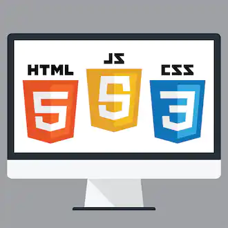

We laran by constant practice
 Johns Hopkins University Johns Hopkins University HTML, CSS, and Javascript for Web Developers Skills you'll gain: HTML and CSS, Web Development 4.7 (15k reviews) Mixed · Course · 1-3 Months
University of Michigan University of Michigan Web Design for Everybody: Basics of Web Development & Coding Skills you'll gain: Web Development, HTML and CSS, Computer Programming, Javascript, Design and Product, Product Design, Web Design, Network Architecture, Other Web Frameworks, Computer Graphics, Human Computer Interaction, Interactive Design, Network Security, Programming Principles 4.7 (33.4k reviews) Beginner · Specialization · 3-6 Months